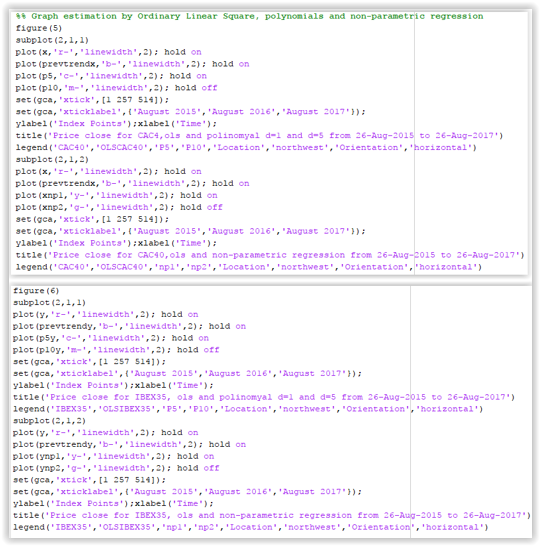
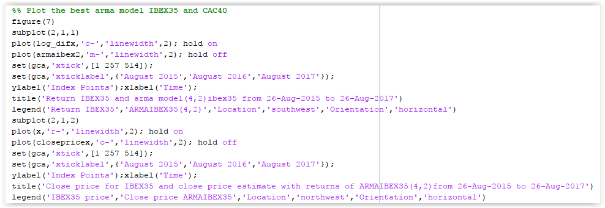
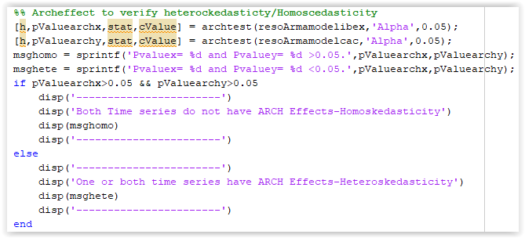
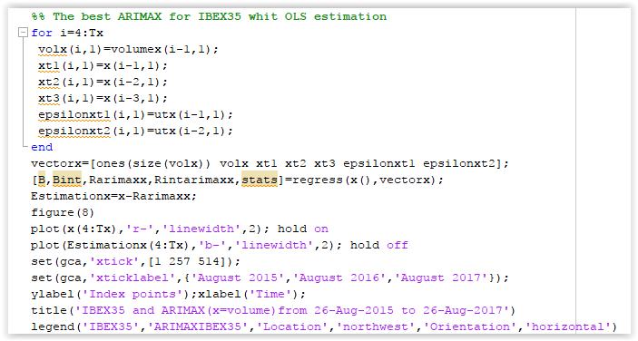

In this code you can see a procedure to download the data from yahoo finance with an auxiliary function to connect from MATLAB. It is necessary to write the securities’ tickers as they are in yahoo finance, then write the initial and final date and the periodicity.
For this project, I analyze two European index IBEX35 and CAC40 which are the Madrid and Paris Market Index over a period of 2 years between 26 august 2015 and 26 august 2017. Afterward, you can load this excel or csv file in Matlab.
It is necessary to verify the figures in the excel file because sometimes yahoo finance throw missing values depending on the stock exchange trading days.
First, the time series analysis required a basic graph and some statistics to study the behavior of the variables.
Normally, the financial time series are nonstationary because they show a bearish or bullish trend that you can graphically see. However, it is necessary to confirm it applying the Unit Root test of Nonstationary either the Dickey-Fuller or Philips Perrot test. Afterward, the variables should be transformed in their differences, logarithms or returns.
The following code shows how to compute the main statistics in a matrix form, indexes graphs and their transformation and the Dicker Fuller and Phillips Perrot test of unit root of non-stationary.


Additionally, it is interesting to study the estimation of ordinary linear square, polynomials of degree 5 and degree 10 and the non-parametric estimation:

 Subsequently, you can plot in the same graph the different estimations by OLS, polynomials functions and non-parametric regression as you can see in the following code:
Subsequently, you can plot in the same graph the different estimations by OLS, polynomials functions and non-parametric regression as you can see in the following code:

Another important component to study a time series is computing the correlogram to see autocorrelations function for data values and varying time lags.
Normally the financial time series present a structure in the correlogram which can help to know if the time series are serially correlated between them.
Therefore, I want to test the following hypotheses:
H0: Autocorrelation of order k is equal to zero: ùëü(i)=0 for all i.
H1: Autocorrelation of order k is different from zero: ùëü(i)‚â†0 for all i.
I perform the correlogram with 20 lags because we are considering daily returns, therefore 20 lags represent approximately 1 month of trading activity, which is an appropriate period to use in the autocorrelation test.
As consequence that time series present a structure in the correlogram, it is recommended to use an ARMA model and use a criterium as AIC (Akaike information criterion) which is useful to decide the best model, as you can see in the bellow code there are two examples to analyze an ARMA model with the arma reg function and arima and estimate function of econometrics toolbox of matlab:
After obtaining the best ARMA model for the series returns you can compute and plot the results and compare them with the initial index time series. Bellow I present one method to do it:

Then, it is important to compute and analyze the residual sample, moreover estimate the arch effect test to verify if the variance is constant or no:

With the previews arch test, I identify that the index’s time series do no present problems of Heteroskedasticity meaning that the variance is constant.
Now, we introduce an exogeneous variable in the model to compute an ARMAX model, in this case the new time series are the index’s volume uploaded in the figure 1. The following code shows one method to compute the best ARMAX with ordinary least square and plot the results to compare them with the initial time series:

In addition, it is important to study the exogeneous time series and verify if they are stationary or not as well as the arch effect. The follow figure displays the analysis of the exogeneous time series:
I can conclude that the time series are stationary. However, they present problems of Heteroskedasticity (Arch effect). It is recommended to use a family Garch model.
For this reason, I apply Garch model for exogenous variables to estimate the conditional variance of the time series model and later compute the best garch model for both index and plot them as you can see in the below code: